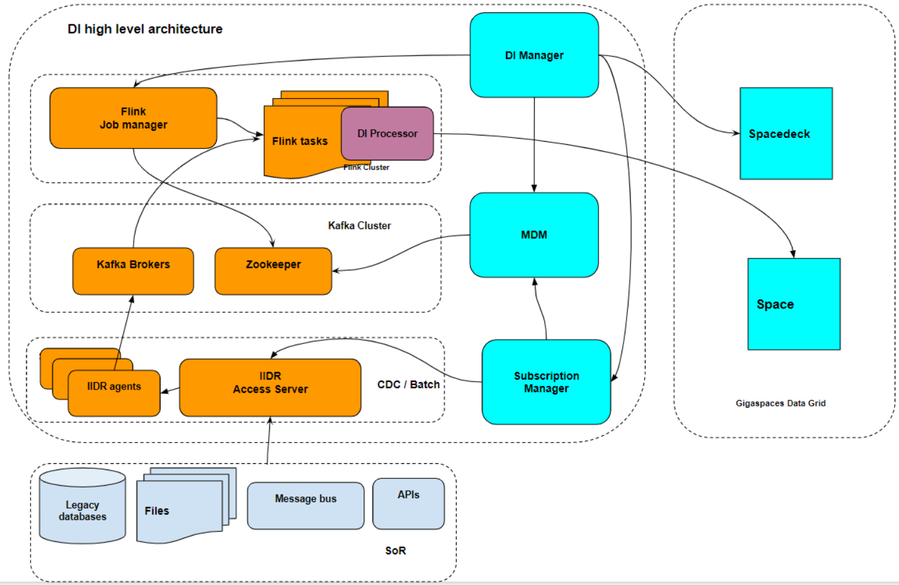
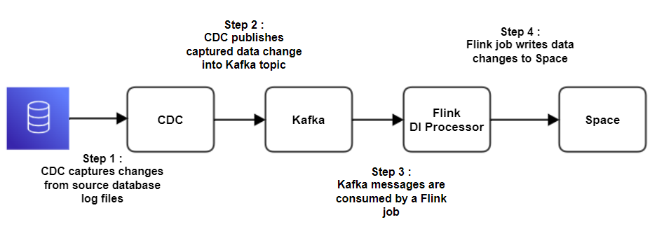
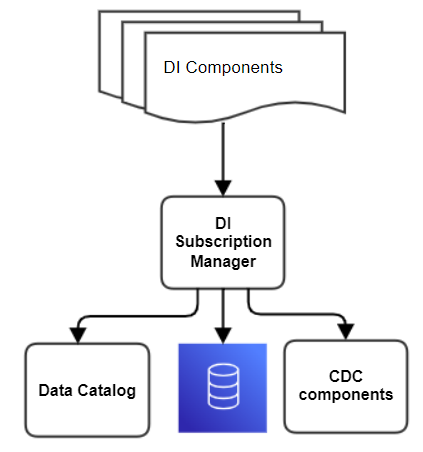

There are several functional components which comprise the DI layer. All serve ongoing DI operations as part of the data integration layer of the Smart DIH platform.
The table below summarizes all the key DI layer components.
| Name | Purpose | Details |
|---|---|---|
| CDC (IIIDR) Source Database Agent | Captures the changes from the source System of Records. For example Oracle, DB2, MSSQL. |
IIDR Source database agent is a java application that usually installed on a source database server. IIDR Agent captures changes from the source database transaction log files in real time IIDR Oracle agent Port: 11001 IIDR Db2 zos agent Port: 11801 IIDR Db2 AS-400 agent Port: 11111 IIDR MSSQL agent Port: 10501 |
| IIDR Target Kafka Agent | Writes the changes captured by IIDR source agent to Kafka. |
IIDR Kafka Agent is a Java application that runs on the Linux machine and writes changes captured by the IIDR source agent to Kafka. Port:11710 |
| IIDR Access Server | IIDR administration service and Metadata Manager |
IIDR Access Server is responsible for creating all logical IIDR entities and objects such as subscriptions and data stores. All metadata is stored in the internal IIDR database (Pointbase) IIDR AS Port: 10101 |
| DI Manager | This is the primary interface which controls all DI components |
Web service, exposes REST APIs to: 1) Create pipeline and source db connection 2) Stop/ start pipeline 3) Other administration tasks Port: 6080 |
| DI MDM (Metadata Manager) | Stores and retrieves metadata in Zookeeper |
Web service, expose REST API Communicates with DI Manager Stores and retrieves metadata that is essential for a DI operation: 1) Data dictionary about tables, columns and indexes 2) Pipeline configuration 3) Other important metadata records that are required for ongoing DI operations Port: 6081 |
| DI Processor | Java library run by Flink as a job. It is responsible for writing changes to the space. | Java library , deployed to Flink and invoked as a Flink job. Main responsibility to read messages from Kafka , perform a transformation from a Kafka message into a space document and write this change into the space relevant object. |
| Zookeeper (ZK) | Serves as a persistent data store for DI components. Serves as a ZK that is required by Kafka. |
ZK runs on 3 nodes for H/A purposes. ZK data is replicated between all nodes. Port: 2181 |
| Kafka | Serves as a streaming processing platform. |
Kafka is deployed in a cluster of 3 nodes when it uses ZK is its dependency. IIDR publishes changes to the Kafka topic and theDI Processor (Flink job) consumes these messages and writes changes to Space. Kafka Port: 9092 |

DI Subscription Manager is a web service that exposes a set of APIs on a port. Its unified API has control over CDC components. Only CDC components are in direct contact with the SoR.

DI Subscription Manager is a micro-service that is responsible for providing the following functionality:
1. Unified API that controls various CDC engines to implement the GigaSpaces pluggable connector vision. It creates and updates IIDR entities.
Defines CDC flows and entities. Defines a new subscription.
Start / Stop subscription data flow via IIDR
Monitors the status of the IIDR components
2. Unified method to extract data dictionary from various sources, such as the CDC engine , source database , schema registry or enterprise data catalog and populate the DI data dictionary internal repository (MDM)
3. Data dictionary extraction from the IIDR.
Significantly simplifies DI operations
Only IIDR components connect to the source database
There is a unified data dictionary extraction, regardless of the source database type
StreamSQL allows Smart DIH users to implement a low code (SQL) approach to define and operate with ad-hoc data flows, such as read from Kafka and write directly to the Space or read from one Kafka topic and write to another Kafka topic.
Behind the scenes StreamSQL utilizes powerful low-code Flink capabilities to define a schema via SQL CREATE TABLE API.
StreamSQL operation activities can be defined using SQL statements, for example:
Define structure of messages in a Kafka topic as a table (CREATE TABLE)
Define a data flow (stream of data or pipeline) as INSERT AS SELECT statement
Perform a join of data flow from different Kafka topics using a standard SQL join statement
One of the useful StreamSQL use cases is IoT when continuous flow of sensors data changes is consumed from Kafka, aggregated into a summary table and pushed the aggregated summary to space for data services consumption.
For information about how StreamSQL is implemented in SpaceDeck refer to StreamSQL.